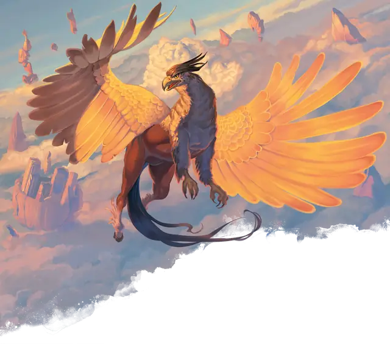

Гиппогриф
Hippogriff
Большое Чудовище, без мировоззрения

Класс Защиты 11 Инициатива +1 (11)
Хиты 26 (4к10 + 4)
Скорость 40 футов, Полёта 60 футов
| мод | спас | ||
|---|---|---|---|
| СИЛ | 17 | +3 | +3 |
| ЛОВ | 13 | +1 | +1 |
| ТЕЛ | 13 | +1 | +1 |
| мод | спас | ||
|---|---|---|---|
| ИНТ | 2 | −4 | −4 |
| МДР | 12 | +1 | +1 |
| ХАР | 8 | −1 | −1 |
Чувства пассивное Восприятие 15
Языки нет
Опасность 1 (200 опыта; БВ +2)
Особенности
Облёт. Гиппогриф не вызывает Провоцированных атак, когда вылетает из вражеской досягаемости.
Действия
Мультиатака. Гиппогриф совершает две атаки Раздиранием.
Раздирание. Бросок рукопашной атаки: +5, досягаемость 5 фт. Попадание: 7 (1к8 + 3) Рубящего урона.
Бонус мастерства +2
Среда обитания Горы, Луга, Холмы
Сокровища Отсутствуют
Гиппогриф
Путешествующий по миру охотник и скакун
Величественные гиппогрифы — наполовину хищные птицы, наполовину лошади, которые готовы сожрать во время своей миграции любую добычу, нередко нападая на одиноких странников и домашний скот. В обмен на корм или другую помощь они готовы взять попутчиков в своё путешествие. Некоторые мудрецы научились точно предсказывать маршруты миграций гиппогрифов, которые порой занимают месяцы и даже годы.
Совершите бросок по таблице «Место прибытия гиппогрифа» для вдохновения или выберите сами, куда направляется гиппогриф.
Место прибытия гиппогрифа
| 1к6 | Гиппогриф направляется... |
| 1 | К затерянным среди облаков или туманов развалинам. |
| 2 | К низко висящей луне, звезде или другому небесному телу. |
| 3 | К магическому саду на парящем в воздухе острове. |
| 4 | К вершине горы, с которой виден гигантский геоглиф. |
| 5 | К своему гнезду на вершине пика. |
| 6 | К порталу в Страну Фей или на Верхние планы. |